Configure your API key and learn how the extension works.
Capture the current web page as a full-page PDF (default) or as a viewport PNG screenshot — your choice in the popup. The file lands in your Downloads and opens for review. No credit is charged until you click Confirm. Once confirmed, the extension SHA-256s the file and anchors that hash on the Polygon blockchain via the public BA Stamp API.
The PDF carries the URL + capture timestamp in the footer of every page. The PNG has the same info in a banner above the screenshot. Both are designed so the resulting file alone tells you what was captured and when.
That this specific PDF existed at the time it was anchored on chain. The on-chain transaction commits to the PDF's SHA-256 forever. Anyone, anywhere, can take that PDF and recompute its hash to prove it matches the anchor.
It does not certify that the page was authentic, that the server wasn't lying, or that no one tampered with the page before you captured it. It only proves that the page as you saw it existed at this time — useful for journalism, IP, AI provenance, scam evidence, and audit trails.
https://bastamp.com/verify/<hash> (the popup shows the link after stamping).If you want to verify without trusting bastamp.com, compute the hash yourself: sha256sum bastamp-….pdf (or .png) on Linux/macOS, certutil -hashfile bastamp-….pdf SHA256 on Windows. The output (prefixed with 0x) must match the hash on the verify page. The open-source verifier at stamp-verify/stamp-verify can also confirm the on-chain anchor independently.
To BA Stamp: only the SHA-256 hash of the PDF (66 chars), the file size, the file name, and the MIME type. The PDF itself never leaves your browser — it's saved straight to your Downloads.
Permissions explained:
activeTab — read the current page (URL + viewport contents) when you click the toolbar button.debugger — needed to call Chrome's Page.printToPDF, the only way to generate a full-page PDF (not just visible viewport). Chrome briefly shows a yellow "DevTools attached" bar; the extension detaches as soon as the PDF is produced. Not used for PNG captures.downloads — save the captured file to your Downloads folder, open it for preview, and delete it if you cancel.storage — store your API key and the in-progress preview state locally (in this browser only).notifications — show a "page stamped" toast after confirm.host_permissions: https://bastamp.com/* — call the stamping API. Nothing else.Each stamp uses one credit from your bastamp.com account. To get a key:
MIT-licensed. Source at github.com/stamp-verify/stamp-extension — every line you load is auditable.